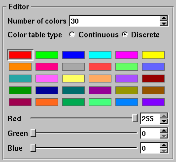

The Color table window's Editor area looks different when you edit a discrete color table. Instead of showing a spectrum of colors, the window shows a grid of colors that correspond to the colors in the discrete color table. The order of the color control points if left to right, top to bottom. To edit a discrete color table, first left click on the color that you want to edit and then use the Red, Green, and Blue sliders to change the color. You can also right click on a color to select it and and also open the Popup color menu. so you can choose a new color.
|  |
| Figure 23 |